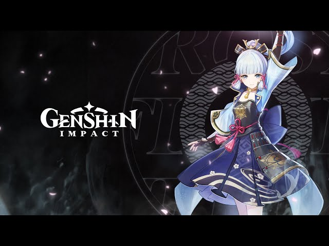
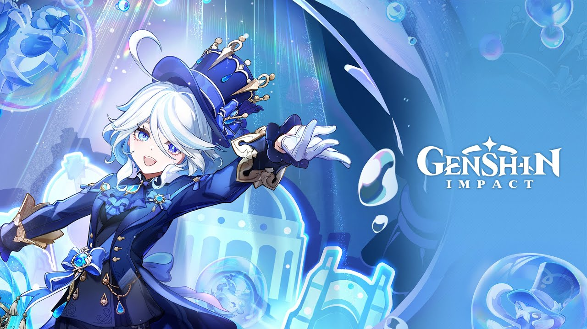
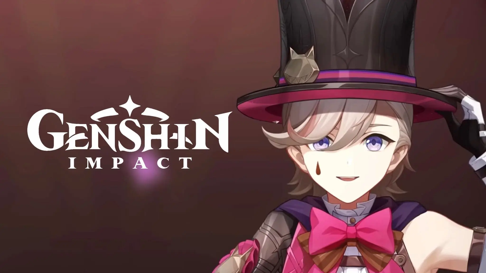
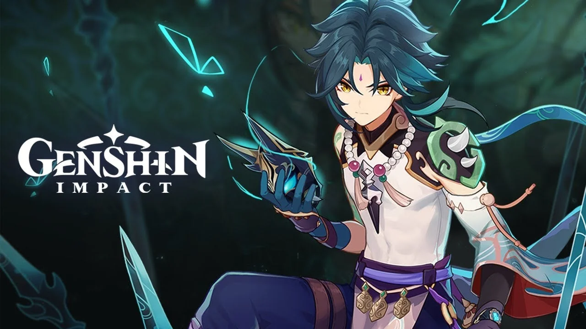
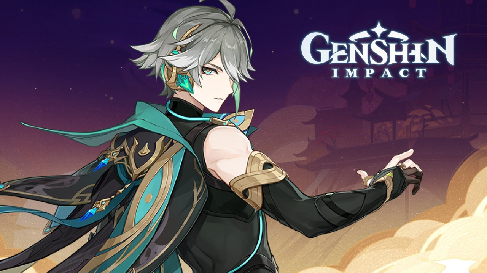
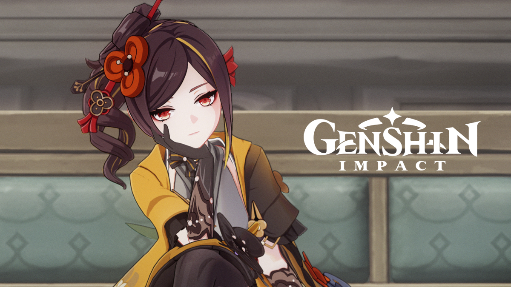

Kamisato Ayaka
Personaje 5 estrellas, la descendiente del clan Kamisato, perteneciente a la Comisión Yashiro de Inazuma. Una persona solemne, refinada, inteligente y tenaz. Comisión Yashiro Arma:espada Reflejo de las tinieblas Elemento:cryo, Artefactos: Nomada del invierno
Shogun Raiden
Su Excelencia, la todopoderosa Narukami, quien le prometió al pueblo de Inazuma la inmutable eternidad. Ciudad de Inazuma, Elemento: Electro, Arma:Luz del segador, Artefactos:Emblema del destino

Furina
El foco de atención absoluto del escenario durante los juicios, hasta que la obra termina y el público rompe a aplaudir. Corte de Fontaine Elemento: Hydro, Arma:Fulgor de las aguas calmas, Artefactos:Compañia dorada
Lyney
Un astuto y hábil mago de Fontaine que siempre se gana al público con sus ingeniosos trucos y su elocuencia. Hotel Bouffes d'Été Elemento: Pyro, Arma:El primer número de la magia, Artefactos:Cazador fantasmal
Xiao
Un Yaksha y Adeptus que protege Liyue. También llamado el “Gran Cazador de Demonios” o “Guardián Yaksha”. Adeptus de Liyue Elemento: Anemo, Arma:Halcón de jade, Artefactos:Deceso del cinabrio
Alhacén
El actual escriba de la Academia de Sumeru, un hombre de gran inteligencia y talento. Vive su vida libremente y es prácticamente imposible de encontrar. Academia de Sumeru Elemento: Dendro, Arma:Clorofilo refulgente, Artefactos: Sueños áureos
Chiori
La dueña de la Sastrería Chiori y una famosa diseñadora de moda de Fontaine. Corte de Fontaine Elemento: Geo, Arma:Cortatelones de Urakusai, Artefactos: Compañia dorada
